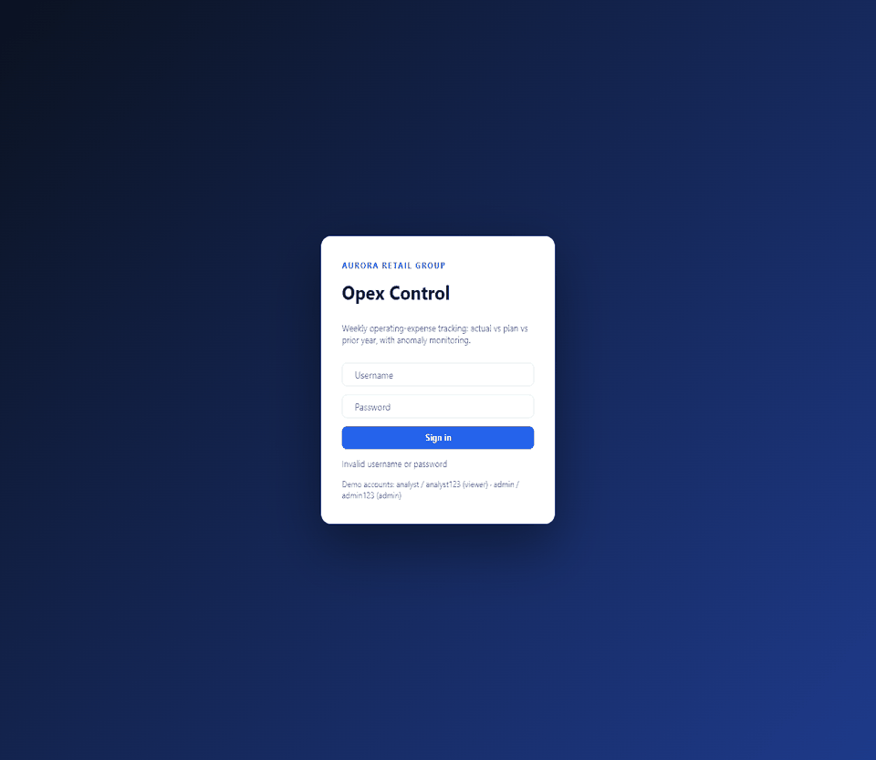
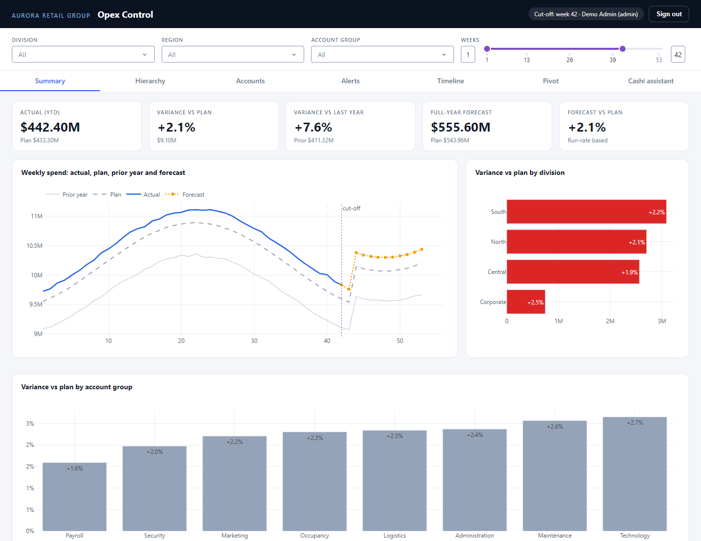
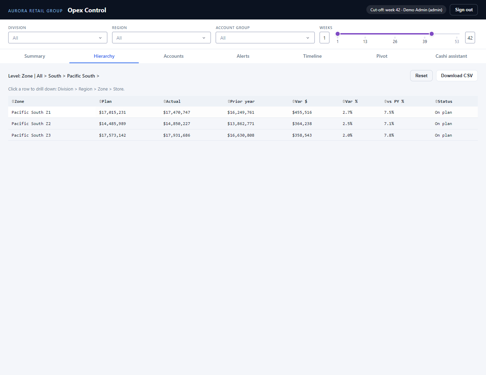
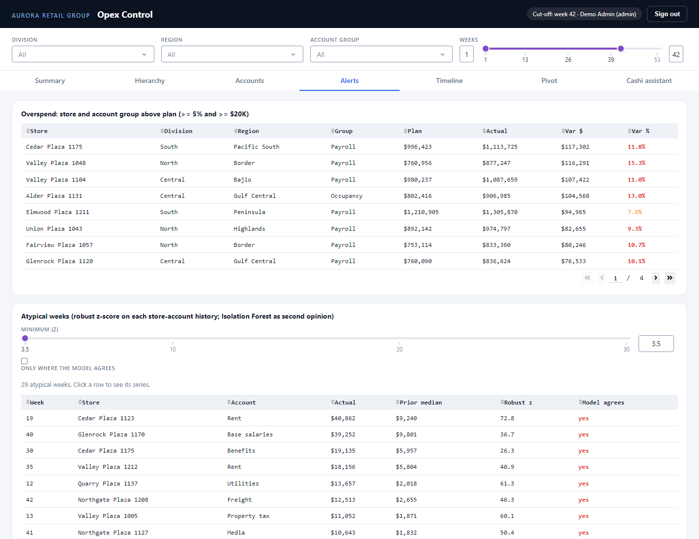
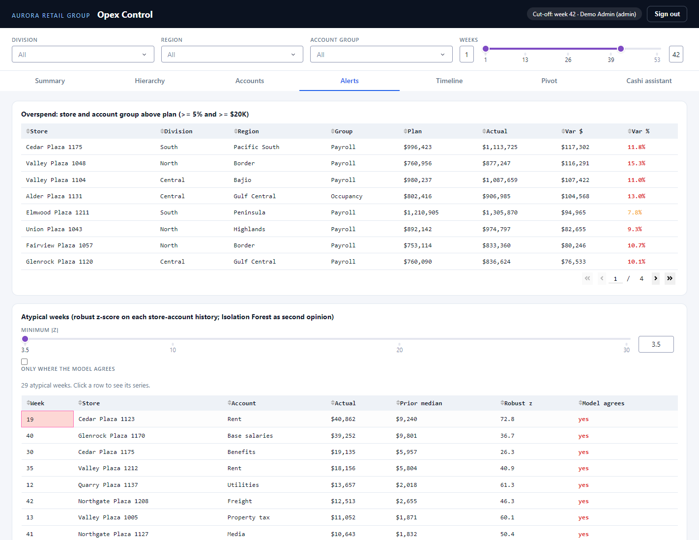
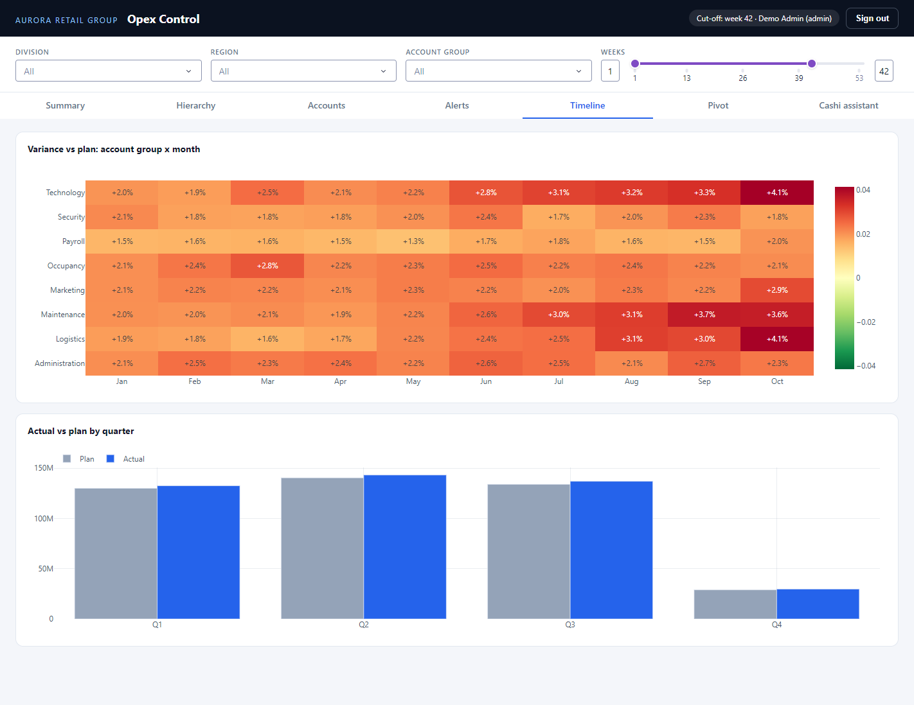
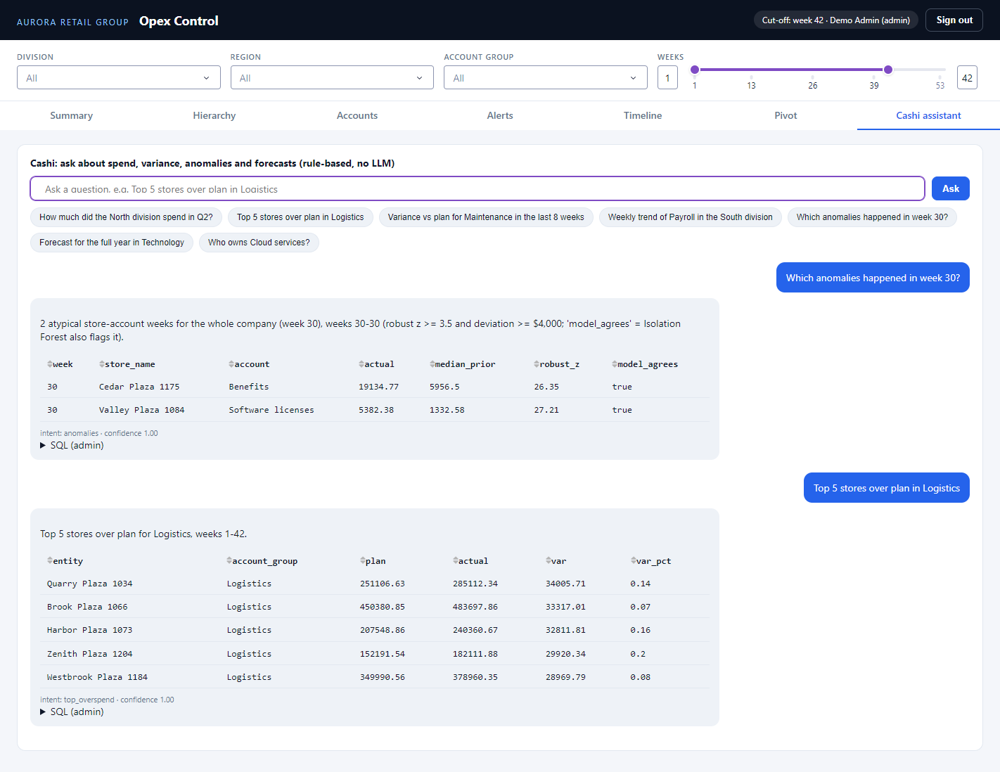

Opex Control Dashboard
Weekly operating-expense control tower: actual vs plan vs prior year, year-end forecast, anomaly alerts and a rule-based assistant. Plotly Dash + DuckDB over a synthetic retail group. The recording below was captured from the running app with headless Chrome.

Screens






Run it
cd opex-control && pip install -r requirements.txt && python pipeline/generate_data.py && python pipeline/build.py && python app/app.py
Source and documentation: opex-control/ in the repository. Demo accounts: analyst / analyst123, admin / admin123.